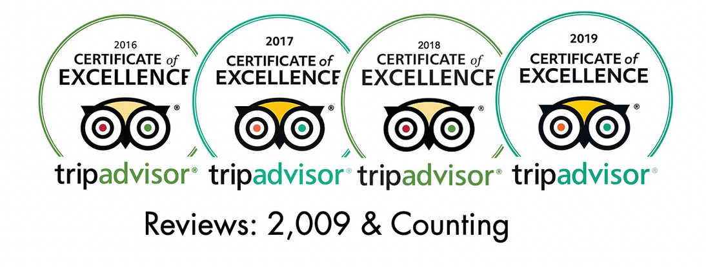

See what everyone's saying!
Click each accordion element to see reviews from different sources.
Yelp
- "A Pittsburgh staple. Love the French toast, home fries, and corned beef hash. Can't go wrong with Pamela's."
- "Simply the best breakfast place!! Pams has my heart. Whether it's the sweet hot cakes or hearty potatoes Pamela's knows how to COOK! I could eat here everyday :)"
- "Legendary hotcakes and great place for a breakfast or brunch styled food with any group. Lot's of simple stables that are also consistent across all their locations."
- "Absolutely fantastic. Buttery pancakes to die for. Super friendly service. Genuinely nice people. Great diner. 'Nuff said."
- "Uh huh you know what it is. BLACK AND YELLOW BLACK AND YELLOW. DUDE this is the restaurant that best represents pittsburgh, not primanti bros. This restaurant has been a staple of mine ever since freshmen year. If it's your first time here, get the corn beef hash with over-easy eggs and rye bread. DO NOT - I repeat, DO NOT forget to order the banana chocolate hotcakes."
Click on the button for more Yelp reviews!
- "Nice service, big portions, lovely place, good prices, tasty food."
- "Very very good! Food was delicious, tried everything on the table. I will say the Chorizo hash we had was the best. Tried the Croissant French Toast, just tastes like good french toast with topping(nothing special). Everything tasted good the next day as well. They were slammed but still very quick service, they were rushing to get our order in but it was nice! Could work on being better with refills, never saw the waitress once we got our food and I didn't get offered a refill until after I finished eating(was water); they were extremely busy though so understandable. Overall, highly recommended."
- "Worth the wait in line if it's busy!!! Excellent breakfast. The hot cakes are a must have but the potatoes are INCREDIBLE. I could eat those all day every day. I ordered the 2 eggs with bacon and potatoes and then shared the hot cakes as they are big and filling."
- "Fine local place to have a breakfast. Good portion size for reasonable price."
Click on the button for more Google reviews!
Tripadvisor

- "One of the best breakfast I have had."
- "Understand the hype."
- "Awesome food, awesome people, awesome time."
- "Friendly atmosphere, inside/outside dining. Plenty of dishes to choose from Clean and safe. Great omelets and crepe style pancakes."
- "AWESOME Food very clean. There was a wait but not very long. They text you when your table is ready. Had their delicious creap hotcakes and the tex mex omelet. Would definitely eat there again."
Click on the button for more Yelp reviews!